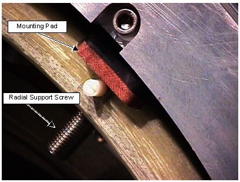

Illustration 22: Installing Radial Supports

| NOTE: | There are two Radial Pads and Screw Hardware sets depending
on TRM age. See Table 1 and Table 2. |
Table 1: Current Production M12 TRM Radial Hardware Required for TRM Installation
| Description | Qty | Part Number |
| Mount Pad Upper, TRM | 4 | 2354503 |
| Set Screw Spherical M12x50 | 4 | 2355333-2 |
| Hex Nut, M12 Nylon 6/6 | 4 | 2355368 |
Table 2: Pre September 2002 M16 Radial Hardware Required for TRM Installation
| Description | Qty | Part Number | Note |
| Mtg Pad Diam. 16 MM Nose | 4 | 2131953-5 | Pad for M16 Screws |
| Set Screw M16x45 | 4 | 2293535 | M16x35 Set Screw |
| Hex Nut, M12 Nylon 6/6 | 4 | 2325862 | M16 Nylon Nut |